Explore Cartagena
A Brief History
Cartagena de Indias was founded in 1533 as a fortified Caribbean port for Spanish silver and slave trade. Walls, bastions, and coral-stone mansions in the old city defended against pirates and rival empires. Independence hero Simón Bolívar landed here in 1811, and the restored centre is a UNESCO World Heritage site. Municipal archives, parish records, and surviving architecture help explain how the city connected to wider regional trade routes, court patronage, and modern civic rebuilding after industrial and wartime change.
Attractions Map
Top Sights & Activities
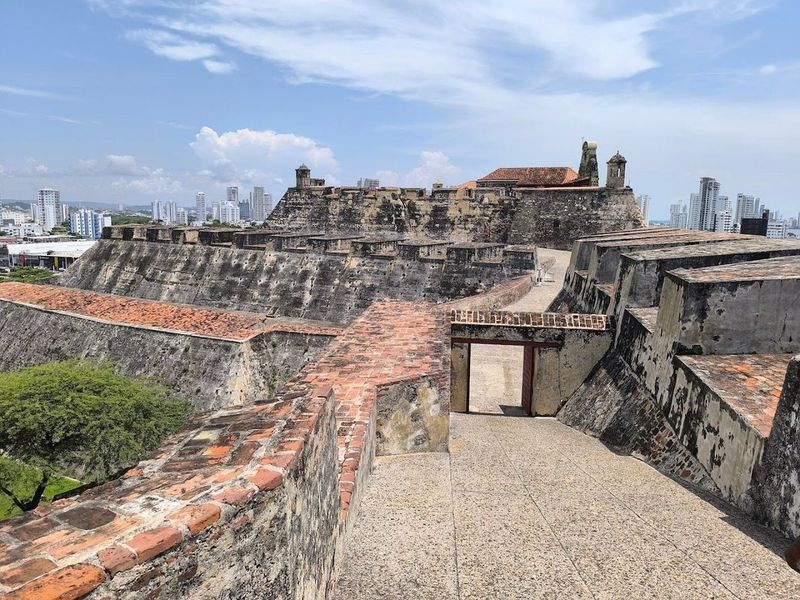
San Felipe de Barajas Fort
San Felipe de Barajas Fort, a hilltop fortress built in the 1600s, is a must-visit landmark in Cartagena. The fort offers audio tours and boasts a complex tunnel system for visitors to explore. Strategically positioned on San Lazaro hill, it provides an impressive view of the city and its surroundings. This UNESCO World Heritage Site is named after Philip IV of Spain and has gradually been constructed over 120 years.
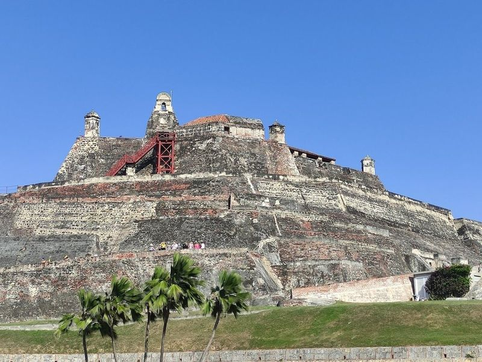
Las Botas Viejas
Las Botas Viejas, also known as "Old Boots," is a bronze sculpture in Cartagena dedicated to the Colombian poet Luis Carlos Lopez. The monument has become a popular landmark for tourists, offering unique photo opportunities and a tribute to the city's literary history. Visitors can step inside the oversized boots and have their picture taken by friendly locals. While it can get hot during the day, it's recommended to visit in the morning or late afternoon to fully enjoy this attraction.
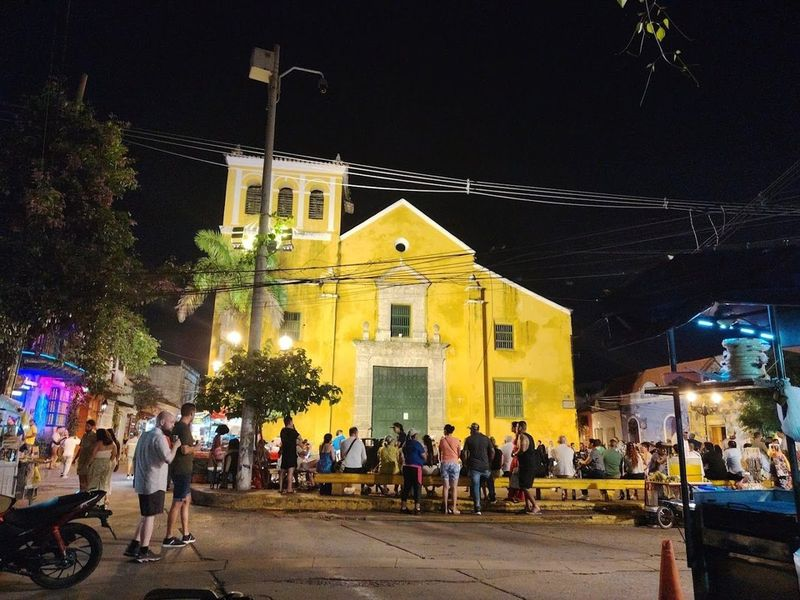
Plaza de la Trinidad
Plaza de la Trinidad is a vibrant urban square in the heart of Getsemani, known for its lively atmosphere and colorful surroundings. The area is filled with food vendors, colorful buildings, and striking murals that adorn the streets. Visitors can immerse themselves in the local culture by enjoying Champeta music, watching street performers dance for tips, and witnessing children playing around the church's staircases.
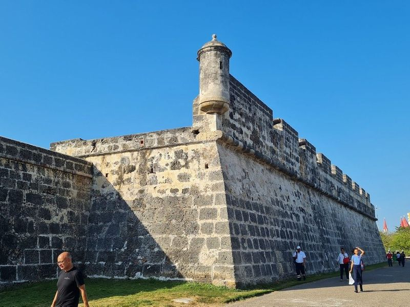
Walls of Cartagena
The Walls of Cartagena are defensive stone walls that stretch 11km around the city, dating back to the 1600s. They are renowned for offering sunset vistas. In the past, Getsemani, once known as a neighborhood with a seedy reputation, has transformed into Cartagena's hippest area. It now boasts an edgy and artistic atmosphere, exemplified by its own city walls which serve as an amazing art gallery.
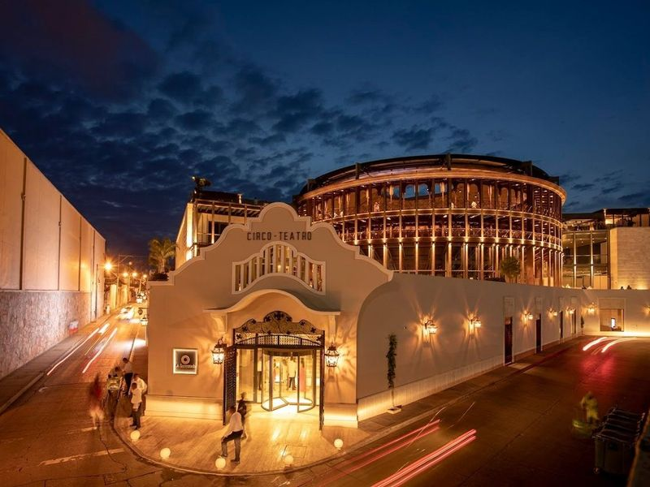
La Serrezuela Mall
La Serrezuela Mall is a chic shopping destination located in the heart of Cartagena's historic walled Old City. This former bullfighting ring has been meticulously restored and transformed into a five-story arena-style mall, featuring boutique shops, an upscale food court, and terraces with city views. The architectural marvel seamlessly blends historical charm with 21st-century amenities.
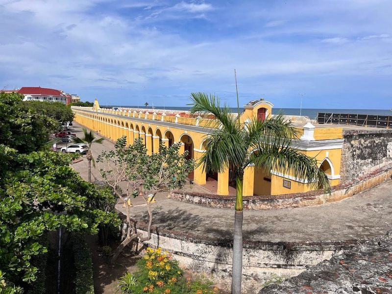
Las Bóvedas
Las Bóvedas, built in the late 18th century, was originally a munitions storehouse and later used as a dungeon during the Wars of Independence. The structure features 47 porticos and 23 domes and is located within the walls of Cartagena's Old City. Today, it houses artisan craft markets in its former cells, making it a popular tourist attraction.
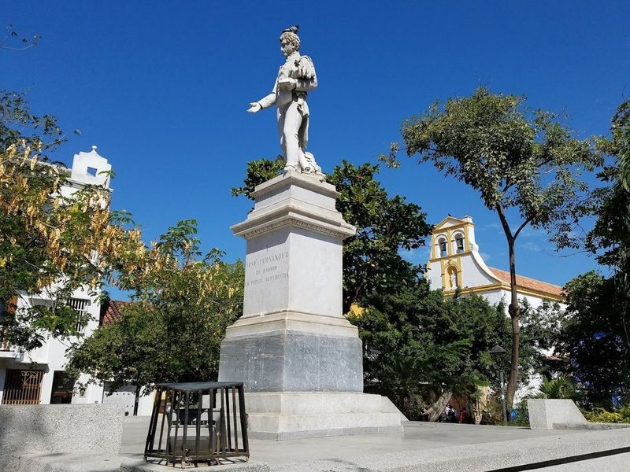
Parque Fernández Madrid
Parque Fernández Madrid is a charming city square surrounded by green spaces and a monument, offering a relaxed atmosphere for visitors. It's an ideal spot to unwind with a book, enjoy a meal, or watch children play. The area boasts several restaurants, including Pizza en el Parque and La Sanwicharia, serving delicious rustic pizza and Mediterranean cuisine. In the evenings, live music performances add to the ambiance.
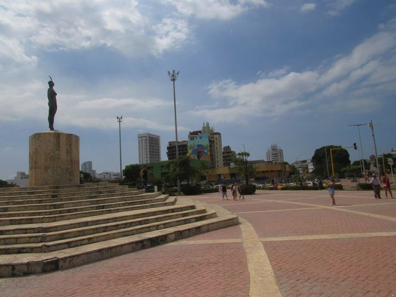
Monumento India Catalina
The Monumento India Catalina is a 1974 statue in Cartagena, Colombia, honoring the legendary India Catalina, an indigenous woman who was kidnapped by Spanish forces as a child and later became a key translator for conquistador Pedro de Heredia. The monument is located on the edge of Centro near a bridge crossing to the rest of the city.
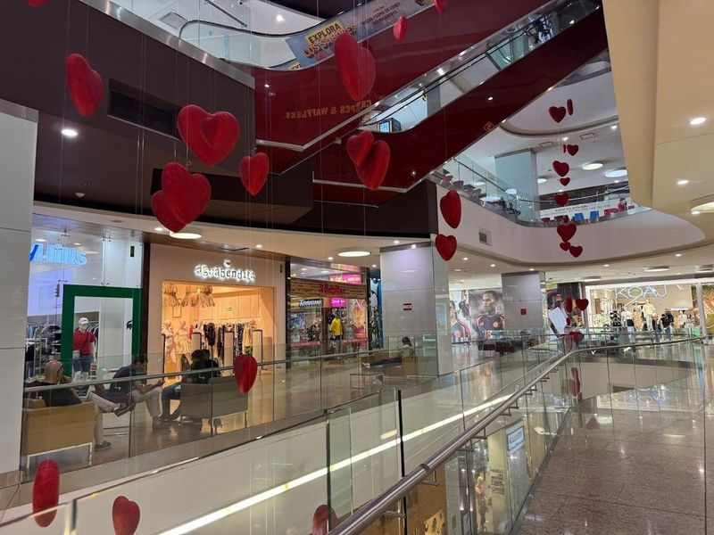
Bocagrande Plaza Mall
Bocagrande Plaza Mall is a top shopping destination in Cartagena, offering a wide range of brand-name retailers, a food court, and a cinema. Situated at the entrance of the Bocagrande neighborhood, the mall provides panoramic views of Bocagrande beach from its extensive balconies on the third floor. Visitors can enjoy various dining options including a Juan Valdez coffee shop and other eateries.
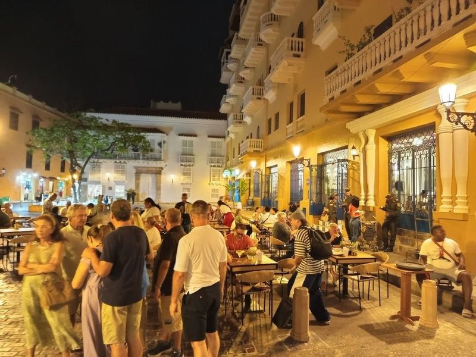
Plaza de Santo Domingo
Plaza de Santo Domingo is a lively and bustling square in Cartagena, Colombia. The highlight of the plaza is the sculpture of La Gorda, a reclining nude bronze statue by Colombian sculptor Fernando Botero. This simple plaza is dominated by restaurants and often filled with street vendors selling artwork and souvenirs. Visitors can enjoy delicious cuisine at the fantastic restaurants while being entertained by street performers.
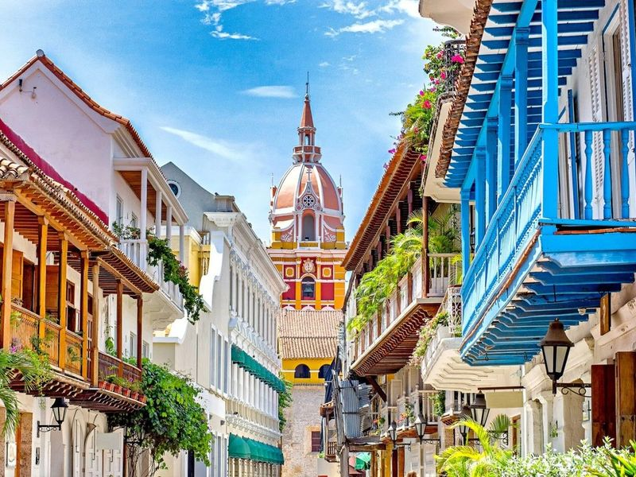
Catedral de Santa Catalina de Alejandría
The Catedral de Santa Catalina de Alejandría is a Spanish-style Catholic basilica located in the heart of Cartagena, Colombia. This national monument, built during the 16th and 17th centuries, stands out with its vibrant lemon-yellow exterior and white trim. The bell tower and dome are prominent features that dominate the city's skyline. As the episcopal see of the Archbishop of Cartagena de Indias, it holds great historical and religious significance.
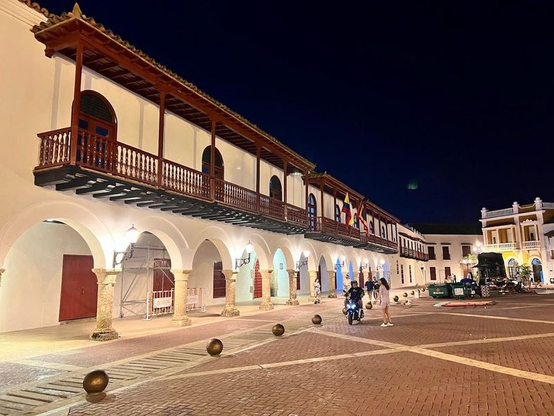
Plaza de la Aduana
Plaza de la Aduana is a spacious square surrounded by colonial-era buildings and features a statue of Christopher Columbus. It is a popular spot for live music and dancing, offering a vibrant atmosphere to experience the local culture. Nearby, Plaza de Santo Domingo also provides lively entertainment, while Plaza de San Pedro Claver showcases a church dedicated to the Catalan missionary who worked to protect and assist black slaves.
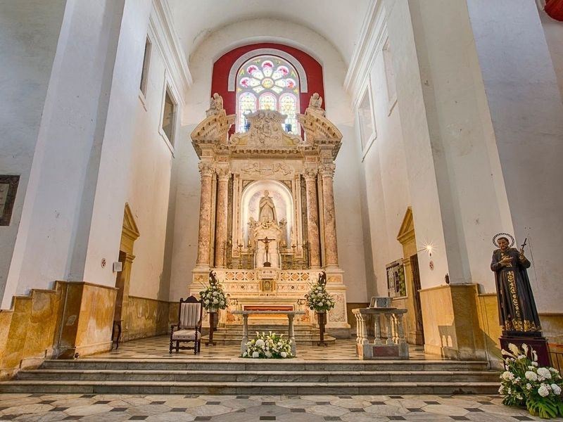
Santuario de San Pedro Claver
Santuario de San Pedro Claver is a 16th-century church in Cartagena, dedicated to the Spanish Jesuit priest, San Pedro Claver. He was an early abolitionist who defended black people of African origin during the open slave trade in Cartagena and the Spanish Empire. The church also houses a museum dedicated to his legacy.
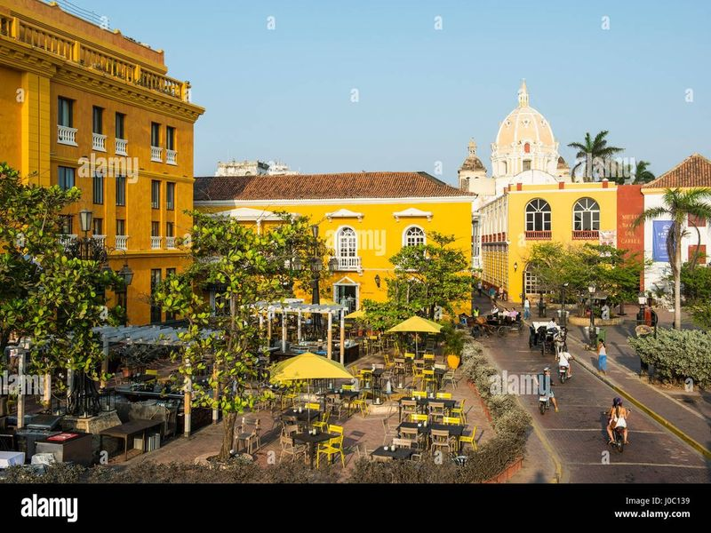
Plaza de Santa Teresa
Plaza de Santa Teresa is a charming square located outside the now-closed Hotel Charleston Santa Teresa. It's a popular spot to purchase traditional Mochila bags and easily find taxis due to its proximity to a city exit. The area boasts well-preserved colonial buildings, creating a magical and peaceful atmosphere that captivates visitors. This lively community offers opportunities to engage with locals, savor traditional cuisine, and immerse in local traditions.
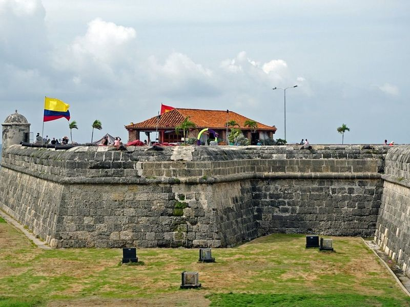
Baluarte de Santo Domingo
Baluarte de Santo Domingo, also known as the Bastion of Santo Domingo, is a historic fortification in Cartagena. It was built to protect the city after Francis Drake's attack in 1586. The well-preserved bastion features large defensive cannons and offers impressive views of the Cartagena skyline. Visitors can enjoy sunset views and ocean scenery, as well as live salsa music for dancing and drinks.
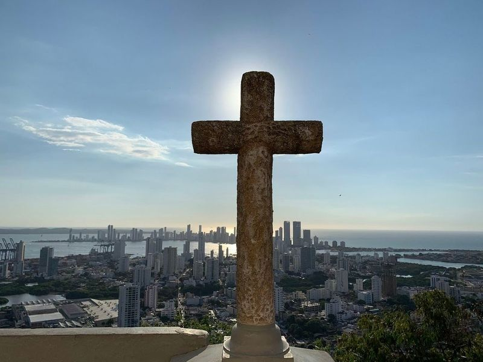
Convent of Santa Cruz de la Popa
Perched atop the highest hill in Cartagena, the Convent of Santa Cruz de la Popa is a 17th-century religious complex offering views of the city and the Caribbean Sea. The monastery features a leafy cloister, a 21k gold-laden chapel, and a tranquil inner courtyard with a statue of the Virgin of Cadelaria. Despite enduring damage from attacks on Cartagena, the convent has been extensively restored over the years.